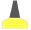

| Морско дело | МППСМ 72 | Навигация | Нормативна уредба | Техническа подготовка |
| № по ред | ВЪПРОС 12 юли 2012 г. | Отговор А | Отговор Б | Отговор В | Отговор Г |
| 1 | Основни точки и кръгове от земното кълбо са: | север, изток, запад, юг | северен полюс, южен полюс, екватор, паралели и меридиани | географска ширина и дължина | екватор и гринуички меридиан и пресечните им точки |
| 2 | Основа за определяне на географските координати служат: | посоките: север, юг, запад, изток | направлението на магнитната стрелка север-юг | равнината на екватора и гринуичкия меридиан | тропика на рака и тропика на козирога |
| 3 | Екваторът разделя земното кълбо на: | западна и източна част | северна и източна част | северно и южно полукълба | на две полусфери |
| 4 | Главният меридиан разделя земното кълбо на: | западна и източна част | северна и източна част | северно и южно полукълба | часови зони |
| 5 | Направлението нагоре, определено от свободно окачен отвес в коя да е точка от земното кълбо наричаме: | Зенит | надир | полюс | небесен полюс |
| 6 | Географската ширина φ (фи) се измерва : | от 0° на екватора до 90° на полюса | от 0° на екватора до 180° на полюса | от 0° на главния меридиан до 180° на изток или на запад | от – 90° до + 90° |
| 7 | Географската дължина λ (ламбда) се измерва: | от 0° на главния меридиан до 180° на север или юг | от 0° на екватора до 90 ° на изток или запад | от 0° на главния меридиан на изток или запад до180°0 | от -180° до + 180° |
| 8 | Географската ширина е нанесена на морската карта: | върху хоризонталната рамка | върху вертикалната рамка | в заглавието на картата | върху меридианите нанесени на картата |
| 9 | Географската дължина е нанесена на морската карта: | върху хоризонталната рамка | върху вертикалната рамка | в заглавието на картата | върху паралелите нанесени на картата |
| 10 | Точка с координати φ = 43°16',7 N и λ=028º05',4 Е се намира: | северното полукълбо, западната част | южното полукълбо, източната част | северното полукълбо, източната част | на изток от гринуички меридиан и на юг от екватора |
| 11 | Точка с координати φ = 67°58'¸5 S и λ = 178°05',8 W се намира: | в западното полукълбо, северната част | в южното полукълбо, източната част | в южното полукълбо, западната част | на изток от гринуички меридиан и на юг от екватора |
| 12 | В коя точка от земното кълбо ще имаме само направление- ЮГ: | на южния полюс | в пресечната точка на екватора и гл.меридиан | на северния полюс | на коя да е точка от южния полярен кръг |
| 13 | По кръговата система за отчитане на световните посоки, равнината на наблюдателя е разделена: | от 0° до 180 ° | от 0° до 90° | от 0° до 360° | от -180° до + 180° |
| 14 | По кръговата система за отчитане на световните посоки, отчитането е: | от север на запад (обратно на часовниковата стрелка) | от север на изток (по часовниковата стрелка) | от север на изток или запад от 0° до 180° | от север без значение в коя посока на часовниковата стрелка |
| 15 | По полукръговата система за отчитане на световните посоки, равнината на наблюдателя е разделена: | от 0° до 180° | от 0° до 360° | от 0° до 90° | от - 90° до + 90° |
| 16 | По четвъртната система за отчитане на световните посоки, равнината на наблюдателя е разделена: | от 0° до 180° | от 0° до 360° | от 0° до 90° | от -180° до + 180° |
| 17 | По румбовата система за отчитане на световните посоки, равнината на наблюдателя е разделена: | от 0° до 360° | на 32 радиана | на 32 части | от - 90° до + 90° |
| 18 | Един румб е равен на: | 11° ¼ | 185 метра | 1/360 от градуса | 1/36 от кръга |
| 19 | Истинския курс (ИК) е ъгъл заключен между: | северната част на меридиана и посоката на движение на кораба | северната част на меридиана и посоката към брегови предмет/ориентир | диаметралната равнина на кораба и посоката към даден предмет/ориентир | посоката на движение на кораба и източната част на паралела |
| 20 | Истински пеленг (ИП) наричаме: | ъгъл, заключен между северната част на меридиана и посоката на движение на кораба | ъгъл, заключен между северната част на меридиана и посоката към даден предмет | ъгъл, заключен между диаметралната равнина на кораба и посоката към предмет | ъгъл, заключен между източната част на паралела и посоката на даден предмет |
| 21 | Този ъгъл наричаме: | ИК (истински курс) | ИП (истински пеленг) | КЪ (курсови ъгъл) | МП (магнитен пеленг) |
| 22 | Курсови ъгъл (КЪ) наричаме: | ъгъл, заключен между северната част към меридиана и посоката на даден предмет | ъгъл, заключен между диаметралната равнина на кораба и посоката към даден предмет | ъгъл, заключен между северната част на меридиана и магнитния полюс | разликата между два пеленга |
| 23 | Истинския курс (ИК) се измерва в градуси от: | от 0° до 90° на север или на юг | от 0° до 180° към ляв или десен борд | от - 180° до + 180° | от 0° до 360° |
| 24 | Върху пътевата морска карта нанасяме /снемаме стойността на: | истинския курс | магнитиня курс | компасния курс | нито един от предходните |
| 25 | Курсовият ъгъл се измерва: | от 0° до 180° към ляв или към десен борд | от 0° до 360° | от 0° до 90° към ляв или към десен борд | от 0° до 90° преди и след траверза |
| 26 | Курсове и пеленги се чертаят на морската карта с помощта на: | двубодов пергел | навигационен триъгълник или транспортир | протрактор | водолиния |
| 27 | Истинският пеленг (ИП) е равен на: | ИП = ИК+КЪ д/б или ИП=ИК-КЪ л/б | ИП = КП - К | ИП = КК + КЪ д/б или ИП = КК - КЪ л/б | ИП = ОКП ± КЪ |
| 28 | Корабният магнитен компас служи за: | определяне на проплаваното разстояние и скоростта на кораба | определяне на дълбочината | определяне курса на кораба и измерване на пеленги | определяне на поправката на жирокомпаса |
| 29 | Основен навигационен прибор на кораба (задължителен за всички кораби) е: | радиолокационна станция | магнитен компас | лот и ехолот | указател за скоростта на завиване |
| 30 | Стрелката на магнитния компас застава в направлението: | определено от посоката на движение на кораба | север-юг | изток-запад | по диаметралната равнина на кораба |
| 31 | Основната част на магнитния компас е: | нактоуз | пеленгатор | чувствителен елемент | Меко желязо |
| 32 | Котелката на морския магнитен компас е окачена към нактоуза с помощта на: | девиационен прибор | карданови пръстени | оптически пеленгатор | скоби от ненамагнитизиращ се материал |
| 33 | Девиационният прибор на корабния магнитен компас служи за: | унищожаване на магнитното склонение | определяне общата поправка на компаса | унищожаване на корабното магнитно поле | унищожаване на външните магнитни сили |
| 34 | Географският полюс и магнитния полюс: | съвпадат | едно и също понятие са | в северното полукълбо съвпадат, а в южното не съвпадат | не съвпадат |
| 35 | Магнитно склонение (d) наричаме : | ъглово отклонение на магнитната стрелка в резултат на земното магнитно поле | ъглово отклонение на магнитната стрелка в резултат на корабното магнитно поле | показанията на девиационния прибор от корабния магнитен компас | разстоянието между географския полюс и съответния магнитен полюс |
| 36 | Магнитното склонение се взема по знак и стойност от: | картата за района на плаване | таблица за девиация на кораба | корабния магнитен компас | корабното удостоверение |
| 37 | Девиация (δ) на корабния магнитен компас наричаме: | ъглово отклонение на магнитната стрелка в резултат на земното магнитно поле | ъглово отклонение на магнитната стрелка в резултат на корабното магнитно поле | ъглово отклонение на магнитната стрелка от истинския меридиан в компасния меридиан | грешка в резултат на неточно измерване вследствие клатенето на кораба |
| 38 | Розата на корабния магнитен компас (картушката) е разделена в градуси за отчитане на световните посоки: | по кръговата система | по румбовата система | по четвъртната система | по екваториалната система |
| 39 | Девиацията на корабния магнитен компас се взема по знак и стойност от: | картата за дадения район на плаване | корабния дневник | техническия паспорт на магнитния компас | таблица за девиация |
| 40 | Девиацията на магнитния компас се променя при: | промяна на района на плаване | промяна на курса на кораба | промяна на денонощното въртене на земята | промяна на температурата на водата |
| 41 | Девиацията на корабния магнитен компас се изчислява: | eжегодно | при изпитанията на кораба след постройка | ежедневно | преди тръгване на кораба на рейс |
| 42 | Общата поправка на корабния магнитен компас( ΔΚ ) е равна: | ΔК = δ - d | ΔК = d - δ | ΔК = (± d ) + (± δ ) | Δ К = (d + δ)/2 |
| 43 | Общата поправка на корабния магнитен компас е равна на: | разликата между истинския курс и истинския пеленг | разликата между девиация и магнитното склонение | средното аритметично на алгебричния сбор от девиацията и магнитното склонение | алгебричния сбор от девиацията и магнитното склонение |
| 44 | Корабния магнитен компас дава показанията за: | компасния курс | магнитния курс | истинския курс | ъгъла между курса на кораба и екватора |
| 45 | Истинския курс( ИК) е равен: | ИК = КК + ( ± Δ Κ ) | ИК = КК – ( ± ΔΚ ) | ИК = КЪ + Δ Κ | ИК = КЪ ± ΔК |
| 46 | Този ъгъл наричаме: | компасен курс | магнитен курс | истински курс | корабен курс |
| 47 | Този ъгъл наричаме: | компасен курс | магнитен курс | истински курс | магнитно склонение |
| 48 | Този ъгъл наричаме: | компасен курс | магнитен курс | магнитно склонение | истински курс |
| 49 | Този ъгъл наричаме: | магнитно склонение | обща поправка на компаса ΔК | девиация на магнитния компас | истински курс |
| 50 | Този ъгъл наричаме: | обща поправка на магнитния компас | девиация на магнитния компас | магнитно склонение | магнитен курс |
| 51 | Този ъгъл наричаме: | истински курсови ъгъл | курсови ъгъл десен борд | истински курс | истински пеленг |
| 52 | Този ъгъл наричаме: | компасен пеленг | компасен курсови пеленг | курсови ъгъл ляв борд | курсови ъгъл десен борд |
| 53 | Истинския пеленг (ИП) е равен: | ИП = КЪ - ΔΚ | ИП = ИК - Δ Κ | ИП = КП + ( ± Δ Κ ) | ИП = ОКП ± Δ К |
| 54 | Компасния курс е равен (КК): | КК = МК-( ± δ ) | КК = ИК - d | КК = ИК + d | КК = КЪ + КП |
| 55 | Далечината на видимост на фаровете върху морските карти е: | изчислена при височина на окото на наблюдателя 2 метра | изчислена при височина на морското ниво | изчислена при височина на окото на наблюдателя 5 метра | изчислена при височина на окото на наблюдателя 24 фута |
| 56 | Далечината на видимост по тази формула се получава в: | метри далечина на видимост | километри далечина на видимост | морски мили далечина на видимост | кабелти далечина на видимост |
| 57 | Основната единица за измерване на разстояния на море е: | километър | метър | морска миля | кабелт |
| 58 | Морската миля е равна на: | 1852 метра | 185 метра | 100 метра | 1/360 от дължината на екватора |
| 59 | Един кабелт е равен на: | 1852 метра | 285 метра | 185 метра | 100 ярда |
| 60 | Кабелта е единица за измерване на: | разстояния | дълбочини | височини | ъгли върху извити повърхности |
| 61 | Един фут е равен на: | 0,3048 метра | 0,914 метра | 0,254 метра | 10 инча |
| 62 | Една миля от морската карта е равна на: | 1 минута от географската ширина | 1 минута от географската дължина | мащаба на картата, намален с 1000 единици | 12 кабелта |
| 63 | Мерните единици за нанесените височини и дълбочини върху морската карта са: | означени зад всяка цифра | означени в известията до мореплавателите | означени в заглавието на картата | означени над изобатите |
| 64 | Скоростта на кораба се измерва в: | километри в час | възли | метри в секунда | кабелта в час |
| 65 | Разстоянията между две точки от морската карта се измерват чрез: | отчитане върху хоризонтална рамка на картата | мащаба на картата | отчитане върху вертикална рамка на картата | милиметрова линия |
| 66 | Скоростта на кораба се измерва с прибор наречен: | лот | ехолот | лаг | спидометър |
| 67 | Приборът за измерване на проплавано разстояние се нарича: | ехолот | лотлин | лаг | спидометър |
| 68 | Един възел е равен на: | проплавана една миля за час | проплаван един километър за час | проплаван един метър за секунда | проплаван един кабелт за час |
| 69 | При скорост на кораба равна на 7 възла за 2 часа той ще измине: | 14 морски мили | 7 морски мили | 14 километра | 14 кабелта |
| 70 | При плаване в близост до брега пътят на кораба се нанася на: | пътеви карти | планове | генерални карти | милиметрова хартия |
| 71 | При мащаб на картата М 1:150 000:числен мащаб 1см от картата=150 000см. от изобр.повърхност-/к-н/ | на 1 см от картата отговарят 15 км от местността | на 1 см от картата отговарят 1,5 км от местността | на 1 см от картата отговарят 15 мили от местността | на 1 см от картата отговарят 150 метра от местността |
| 72 | Основните карти, които се използват в корабоплаването са: | конична проекция | азимутна проекция | меркаторска проекция | физически карти |
| 73 | При определяне мястото на кораба с два и повече пеленга, последователността за вземане на пеленгите е: | първо се пеленгуват тези обекти, които са на траверса на кораба | първо се пеленгуват тези обекти, които са по носа или кърмата на кораба | няма значение последователността | от най-далечните ориентири към най близките |
| 74 | Способът „крюиз-пеленг” за определяне мястото на кораба се прилага: | когато видимостта не е добра | при повече от три брегови ориентира | ако има само един брегови ориентир | при нисък брегови ориентир |
| 75 | Определяне на мястото на кораба по „крюиз-пеленг” е способ при който се извършва: | разновременно пеленгуване на 1 обект и изчисляване/отчитане на проплаваното разстояние между пеленгите | пеленгуване на1 обект и вземане разстояние до него в момента на откриването му на хоризонта | пеленгуване на навигационен ориентир и снемане на вертикален ъгъл към него | измерване на разстоянието до ориентир и вземане на височината до ориентира от картата |
| 76 | При определяне мястото на кораба по 3 пеленга много често мястото се намира: | в триъгълника получен от пресичането на трите пеленга | в пресечната точка на 2 от пеленгите към обекти намиращи се най-близо до траверса на кораба | на разстояние 1 миля в посока обратна на курса на кораба | в квадрат |
| 77 | Прокладка наричаме: | графично нанасяне пътя на кораба върху навигационна карта | способ за определяне мястото на кораба по пеленг и разстояние | определяне мястото на кораба върху картата | изчисляването на изминатото разстояние за един час |
| 78 | Видовете прокладка са: | дневна и нощна | морска и речна | предварителна и действителна | в мащаба на картата и в мащаб различен от този на картата |
| 79 | Инструменти необходими за извършване на прокладка са: | лотлин, психрометър, анемометър | транспортир, паралелна линия, пергел, молив | барограф, термограф, анероид, хидрограф | молив, линия и пергел |
| 80 | Лоцията като раздел от корабоводенето разглежда въпросите: | за способите за определяне мястото на кораба | относно описанието на даден район и препоръки за безопасно плаване | относно правилното натоварване и опазване на товара на борда на кораба | за управлението на кораб плаващ с ветрила |
| 81 | Основен брегови навигационен ориентир отбелязан на морската карта е: | фар | радиофар | буй | брегова радиолокационна станция |
| 82 | Плаващи средства за навигационно ограждане са: | течения, вълнение, ледове | фар, огън, навигационен знак, створ, пилон | веха, бакан, буй | плаващи сонди |
| 83 | Морският буй е: | дневен и нощен навигационен плаващ ориентир | само дневен навигационен ориентир | водещ брегови навигационен ориентир | навигационен ориентир снабден с устройство за подаване на сигнали при мъгла |
| 84 | Шквалът е: | неочаквано краткотрайно усилване на вятъра | маломащабен вихър | намаляване на силата на вятъра | ураганен вятър |
| 85 | Релефа на дъното и очертанията на брега: | не оказват влияние върху статичната и динамична характеристика на течението | оказват влияние върху теченията | оказват влияние само на статичната характеристика на течението | влияят върху скоростта на приливите и отливите |
| 86 | При плаване в прибрежни води GPS обсервациите се проверяват посредством: | само с визуални определения | с визуални и радарни определения | с радарни и ехолотни определения | с хронометър |
| 87 | При наблюдение на един ориентир, мястото на кораба може да бъде определено: | само по Крюиз-пеленг | само по пеленг и вертикален ъгъл | по два хоризонтални ъгла | по начините изброени в точка „а” и „б” |
| 88 | Върху елементите на вълнението влияние оказват: | посоката, скоростта, продължителността на действие на вятъра и разгона | само действието на вятъра | само посоката на вятъра | само релефът на шелфа |
| 89 | Навигационен ориентир на н. Галата е: | масивната сграда на ресторант „Галата” | фар с пробляскваща светлина | метален пилон – фирмена кострукция | кръстът на местната църква |
| 90 | Аладжа банка се намира в района: | пред н. Галата | пред КК „Албена” | пред КК „Златни пясъци” | на юг от Созопол |
| 91 | Плаващия знак на Аладжа банка огражда навигационна опасност от: | запад | изток | север | юг |
| 92 | Бреговата крайбрежна ивица от н. Екрене до КК „Албена” е: | камениста | тиня, раковини и миди | пясък, плажове | силно нарязана |
| 93 | Фар Екрене се намира: | на юг от н. Черни нос | на север от КК ”Златни пясъци” | на юг от устието на р.Камчия | на Змийския остров |
| 94 | Нос Свети Атанас се намира: | на юг от н. Черни нос или на юг от устието на р.Камчия | на север от н. Черни нос | на север от н. Калиакра | на о-в Свети Иван |
| 95 | Нос Калиакра е: | висок и скалист, почвата и скалите са оцветени в червено | нисък и песъчлив, почвата е оцветена в бяло | висок, горист, преобладава зеления цвят | нисък, силно издаден в морето горист нос |
| 96 | Нос Емине е: | висок, стръмен бряг, пластовете са наклонени, почвата е бяла | висок, скалист,почвата и скалите са червени | висок, горист, преобладава зеления цвят | нисък, заоблен, полегат бряг |
| 97 | Линиите свързващи точки с една и съща дълбочина върху морската карта се наричат: | изолинии | изогони | изобати | изобари |
| 98 | Магнитна аномалия по Българското черноморско крайбрежие има в района на: | н. Калиакра | Варненския залив | Бургаския залив | Маслен нос |
| 99 | Основна причина за наличието на вятър е: | разликата в атмосферното налягане между различни точки от земното кълбо | различната степен на облачност в районите | денонощното въртене на земята | топли и студени морски течения |
| 100 | При определяне посоката на вятъра отчитането е по: | кръговата система | румбовата система | полукръговата система | часовниковата стрелка |
| 101 | По скалата на Бофорт, силата на вятъра се оценява в: | балове: от 0 до 9 бала | градуси: спрямо световните посоки | балове: от 0 до 12 бала или м/сек | в кг/см² |
| 102 | Силата на вятъра се измерва с помощта на: | анемометър | психрометър | барометър | динамометър |
| 103 | При движение на кораба стойността на измерените сила и посока на вятъра представляват: | относителен вятър | истински вятър | корабен вятър | нито едно от изброените в букви „а”, „б” и „в” |
| 104 | Фордевинд наричаме вятърът, който идва към кораба: | откъм кърмата | откъм траверса | откъм носа | от север |
| 105 | Вятърът, който духа в кърмовата част на кораба към ляв или десен борд се нарича: | левентик | бакщаг | бейдевинд | вятър по кърмата |
| 106 | Денонощният или седмичен ход на температурата на въздуха се регистрира с помощта на: | термограф | хидрограф | барограф | термометър |
| 107 | Атмосферното налягане се измерва с помощта на: | анемометър | аспирационен психрометър | барометър-анероид | барокамера |
| 108 | Влажността на въздуха се измерва с помощта на: | анемометър | аспирационен психрометър | барометър-анероид | живачен термометър |
| 109 | При падане на атмосферното налягане може да се прогнозира: | подобряване на времето | устойчиво и продължително хубаво време | влошаване на времето | спиране на вятъра |
| 110 | При продължително високо налягане, може да се прогнозира: | подобряване на времето | устойчиво и продължително хубаво време | влошаване на времето | повишаване на нощните температури |
| 111 | За района на Българското черноморско крайбрежие през деня БРИЗА има посока: | от морето към брега | от брега към морето | от запад на изток | успоредно на крайбрежието в посока север-юг |
| 112 | Нарушаването на денонощния ритъм на бриза е признак за: | подобряване на времето | устойчиво и продължително хубаво време | влошаване на времето | предстоящи валежи |
| 113 | При залез слънце, когато вятърът се засилва и се завърта по часовата стрелка може да се очаква: | спадане на вятъра и утихване | щорм | устойчиво и хубаво време | цунами |
| 114 | Когато температурата на въздуха през нощта е по-висока от тази през деня може да се очаква: | подобряване на времето | устойчиво и продължително хубаво време | влошаване на времето | наближаване на зимата |
| 115 | Когато през деня влажността на въздуха намалява, а вечерта се увеличава това е признак за: | устойчиво и хубаво време | влошаване на времето | щорм | мъгла |
| 116 | Пурпурното небе при изгрева на слънцето е признак за: | лошо време-вятър, дъжд | хубаво и устойчиво време | подобряване на времето | повишаване на влажността на въздуха |
| 117 | Ако около луната или слънцето има ХАЛО (голям кръг) това може да е признак за: | лошо време-вятър, дъжд | хубаво и устойчиво време | мъгла | по-големи приливи и отливи |
| 118 | Когато Луната изгрява червена, се очаква: | вятър | мъгла | хубаво време | мъртво вълнение |
| 119 | Когато чайките кацат и стоят по повърхността на морето се очаква: | влошаване на времето | мъгла | хубаво време | застудяване |
| 120 | Когато при дъжд птиците летят високо се очаква: | влошаване на времето | подобряване на времето | щорм | не се очаква промяна на времето |
| 121 | Ветровите вълни възникват в следствие на: | разликата в температурата на водата в различните райони(части)на морето | предаване енергията на вятъра на водните частици по морската повърхност | разликата и резките изменения на атмосферното налягане в дадения район | разликата в солеността на водата |
| 122 | За посока на вълнението се приема: | посоката, в която се движат вълните | север, изток, запад, юг | посоката, от която идват вълните | Направлението на най-големите вълни |
| 123 | При отчитане посоката на вълнението се използва: | румбовата система | кръговата система | курса на кораба (диаметралната равнина) | декартова координатна система |
| 124 | По скалата на Бофорт силата на вълнението се оценява : | в балове: от 0 до 9 бала | в балове: от 0 до 12 бала | в метри за секунда | в румбове |
| 125 | Под ЗИБ(мъртъв зиб) разбираме: | вълнението, което се намира под непосредственото въздействие на вятъра | вълнение, когато се срещат две или повече видове вълни (стоящи вълни) | вълнението, което не се намира вече под въздействието на вятъра | клатенето на кораба под въздействие на вятъра |
| 126 | Под ПРИБОЙ разбираме: | вълни близо до брега, когато дълбочината става по-малка и все повече намалява | разбиване на вълните в брега | вълнението, което се създава от вятъра духащ в даден момент на дадено място | звукът издаван при разбиването на вълните в брега |
| 127 | Под БУРУНИ разбираме: | разрушаване на вълните в подводни или надводни плитчини, разположени на разстояние от брега | вълнение, което не се намира вече под въздействието на вятъра | вълни близо до брега, когато дълбочината непрекъснато намалява | бурун е турска дума и означава нос в географския смисъл на думата |
| 128 | Под МОРСКИ ТЕЧЕНИЯ разбираме: | хоризонтално движение на въздушни маси | преместване на водни маси в морето | охлаждане на повърхностния слой вода до отрицателни температури | вертикално движение на водните маси |
| 129 | Основни сили, които предизвикват течения са: | периодичните приливообразуващи сили на Луната и Слънцето | продължителни и преобладаващи ветрове | конфигурация на бреговете и релефа на дъното | центробежните сили от движението на земята около оста си |
| 130 | За посока на морското течение се приема: | в северното полукълбо посоката, в която се движи течението (течението „изтича”от компаса), а в южното полукълбо посоката, от която идва течението („влиза” в компаса) | посоката, от която идва течението („влиза” в компаса) | посоката, в която се движи течението (течението „излиза” от компаса) | основните посоки: север, изток, запад, юг |
| 131 | Скоростта на течението се определя в: | метри за секунда или възли | градуси спрямо курса на кораба | километри в час | метри за минута |
| 132 | При определяне посоката на течението отчитането е: | в румбове или градуси от 0° до 360° | в балове от 0 до 12 бала или м/сек. | по полукръговата система | по четвъртната система |
| 133 | Под ДРЕЙФ разбираме: | движение на кораба след даване на „стоп” до преустановяване на движението му | преместване на кораба спрямо дъното под въздействие на вятър или течения | способ за заставане на плаваща котва срещу вятъра и вълната | движение на кораба с приспусната котва на малък ход |
| 134 | При плаване в близост до брега в условията на мъгла е препоръчително: | да се приспусне котвената верига (дължина равна на 3 пъти газенето на кораба) | да се изхвърли баласта от танковете и намали максимално газенето на кораба | да се плава на равен кил (Тн=Тк ) | да се намали скоростта |
| 135 | По време на скоростни изпитания курсът на кораба се поддържа: | по магнитния компас | по жирокомпаса | по линията на равните разстояния по 2 брегови ориентира | с автопилот |
| 137 | Ставро банка се намира в района на: | южно от пристанище Царево | югоизточно от нос Поморие | източно от пристанище Каварна | на юг от нос Калиакра |
| 138 | Секторен фар по Българското черноморско крайбрежие има на: | остров Св. Иван | нос Св. Атанас | остров Св. Анастасия | нос Калиакра |
| 142 | Морското течение, което е в близост до Българското черноморско крайбрежие има | направление от юг към север | направление от север към юг | направление от запад към изток | променливо направление |
| 143 | Дълбочините на морската навигационна карта № 201 Българско черноморско крайбрежие са нанесени в: | сажени | метри | футове и инчове | футове |
| 144 | Приборът, който служи за измерване на дълбочини се нарича: | лаг | лот | радиолокационен транспондер | анемометър |
| 145 | За бързо и точно измерване на дълбочини независимо от скоростта на кораба се използва: | хидродинамичен лаг | ехолот | лот | устройство за геопозициониране |
| 146 | С помощта на ръчен лот се измерват дълбочини до: | 10 метра и скорост до 7 вз. | 20 метра и скорост до 5 вз. | 50 метра и скорост до 3 вз. | 1 кабелт и скорост 0 вз. |
| 147 | С помощта на ръчния лот може да се определя и: | характера на грунта/дъното | плътността на водата | температурата на водата | скоростта на водата |
| 148 | Ехолотът измерва дълбочината от: | от дъното до водолинията | от дъното до кила на кораба | от главна палуба до кила на кораба | от дъното до мостика |
| 149 | При планиране на рейс на навигационните карти се надписват: | само компасните посоки | само истинските посоки | само магнитните посоки | географските координатите в които се планирани вахтените смени |
| 150 | При какви условия корабът трябва да се движи с безопасна скорост | само в ограничена видимост | само през нощта | по всяко време | когато предстои разминаване |
| 151 | Съгласно добрата морска практика безопасното разстояние за разминаване е: | минимум 10 кабелта | минимум 12 кабелта | минимум 20 кабелта | не по-малко от 3 морски мили |
| 152 | Какво представлява Racon: | радиомаяк | пасивен радиолокационен отражател | активен радиолокационен отражател | навигационна система на военноморските сили на САЩ |
| 153 | Ветроходът плава на: | ляв бейдевинд | ляв халфвинд | фордевинд | десен галс |
| 154 | Ветроходът плава на: | ляв галс | десен халфвинд | десен бейдевинд | бакщаг |
| 155 | Международните правила за предпазване корабите от сблъскване са задължителни за : | всички кораби | всички кораби с изключение на военни кораби | за всички морски райони с изключение на крайбрежните райони | за големите кораби |
| 156 | Знакът нанесен на морска карта означава: | сух док | шлюзова преграда | буна | мол |
| 157 | Знакът нанесен на морска карта означава: | посока и скорост на движение на кораба | посока и скорост на вятъра във възли | дълбочина над известен подводен обект | посока и скорост на приливно течение, както са обозначени |
| 158 | Знакът нанесен на морска карта означава: | дълбочина над неизвестен подводен обект | посочената дълбочина не е потвърдена | дълбочина над известен подводен обект | приблизителна дълбочина |
| 159 | Знакът нанесен на морска карта означава: | водорасли | посока на движение на променливо течение | зоопланктон | обичаен път на движение на рибни пасажи |
| 160 |  |
скални острови | забранен за плаване район | скали, показващи се над повърхността на водата на указаната височина | подводни скали с показана дълбочина над тях |
| 161 | Знакът нанесен на морска карта означава: | място на разполагане на кораб - мишена | потънал под водата кораб | кораб мишена | потънал кораб, чийто корпус се вижда над водата |
| 162 |  |
останки от потънал кораб, чийто мачта се показва над водата | изкуствен навигационен ориентир | потънал под водата кораб | мачта, на която има поставена УКВ антена |
| 163 | Знакът нанесен на морска карта означава: | УКВ радио антена | изкуствен навигационен ориентир | останки от потънал кораб, които не са опасни за корабоплаване под повърхността | потънал кораб, чийто корпус се вижда над водата |
| 164 | Знакът нанесен на морска карта означава: | препятствие с най-малка дълбочина над него, както е указана | отделна изолирана дълбочина | отделна плитковина с приблизително измерена дълбочина | препятствие за корабоплаването с посочена височина над водата |
| 165 |
Знакът нанесен на морска карта означава: |
опасни останки от потънал кораб, дълбочината е неизвестна | УКВ радио антена с приблизително нанесено място | отделна плитковина с приблизително нанесено място | потънал кораб, чийто корпус се вижда над водата |
| 166 |
Знакът нанесен на морска карта означава: |
останки от потънал кораб, дълбочината е неизвестна | останки от потънал кораб, които не са опасни за корабоплаване по повърхността | потънал кораб, чийто корпус се вижда над водата | потънал под водата кораб |
| 167 |
Знакът нанесен на морска карта означава: |
буй за изолирана опасност | платформа с дадено наименование/обозначение | фар светещ с червена светлина | буй за безопасни води |
| 168 |
Знакът нанесен на морска карта означава: |
задължително кръгово движение около платформата | район забранен за риболов | зона за безопасност около отдалечено от брега съоръжение | швартови буй |
| 169 | Знакът нанесен на морска карта означава: | Препоръчителен фарватер | траектория на променливо морско течение | фарватер, на който е разрешено заставането на котва | подводен кабел |
| 170 | Знакът нанесен на морска карта означава: | линия обозначаваща подводен кабел | фарватер, на който е разрешено заставането на котва | подводен тръбопровод за нефт / газ | подводни кладенци за добив на нефт / газ |
| 171 | Знакът нанесен на морска карта означава: | водещи/створни знаци | посоката на положен подводен тръбопровод | посоката на положен подводен кабел | направление по което трябва да се избягва движението |
| 172 | Знакът нанесен на морска карта означава: | препоръчан път с максимално допустимо въздушно газене, обозначено на него | препоръчан път с максимално допустимо газене, обозначено на него | посоката на положен подводен тръбопровод с дълбочина над него | направление по което трябва да се избягва движението в продължение на 7 мили |
| 173 |
Знакът нанесен на морска карта означава: |
забранено заставането на котва | безопасно място, където може да се приспусне котвата | място, при преминаването на което котвата трябва да се приготви за отдаване | място за заставане на котва |
| 174 |
Знакът нанесен на морска карта означава: |
котвена стоянка | място забранено за заставане на котва | район забранен за заставане на котва | котвена стоянка за кораби превозващи опасни товари |
| 175 | Знакът нанесен на морска карта означава: | обичаен път за движение на рибните пасажи | граница на риболовна зона | зона, в която могат да се движат само риболовни кораби | зона, забранена за преминаване на всякакви кораби |
| 176 | Знакът нанесен на морска карта означава: | брегова линия с плажна ивица | брегова линия с пустиня | брегова линия, която е изследвана | брегова линия, която не е изследвана |
| 177 | Знакът нанесен на морска карта означава: | брегова линия с пустиня | брегова линия с плажна ивица | брегова линия, която не е изследвана | приблизително нанесена брегова линия |
| 178 | Знакът нанесен на морска карта означава: | бряг с гори в крайбрежната зона | бряг с дюни близо до брега | брегова линия, която не е изследвана | стръмен скалист бряг |
| 179 | Знакът нанесен на морска карта означава: | бряг с дюни близо до брега | приблизително нанесена брегова линия | брегова линия, която не е изследвана | песъчлив бряг |
| 180 | Знакът нанесен на морска карта означава: | триангулачни точки | приблизителни стойности на нанесените височини | отделни височини на брега | приблизително нанесени места на височини |
| 181 | Знакът нанесен на морска карта означава | подводен тръбопровод | кабел високо напрежение на пилони с обозначение на безопасната височина за преминаване | място където плава ферибот свързващ двата бряга | линия, на която е забранено заставането на котва |
| 182 | Знакът нанесен на морска карта означава: | опасност за корабоплаването, която е над водата | опасни подводни скали с неизвестна дълбочина над тях | скали, които се виждат над водата | място, на което е потънал неизвестен кораб |
| 183 | Знакът нанесен на морска карта означава: | закотвена пилотска станция, носеща червена светлина | плаваща УКВ радиоразпръсквателна станция | плаващ фар | буй с кръстовидна топова фигура, светещ червено |
| 184 | Знакът нанесен на морска карта означава: | секторна светлина | кръгово видима светлина със сектор, в който не се вижда | кръгово видима светлина със сектор, в който свети червено | кръгово видима светлина със сектор, в който плаването е забранено |
| 185 | Знакът нанесен на морска карта означава: | кръгово видима светлина със сектор, в който не се вижда | кръгово видима светлина със сектор, в който свети червено | кръгово видима светлина със сектор, в който плаването е забранено | кръгово видима светлина със сектор, в който е забранено заставането на котва |
| 186 |
Знакът нанесен на морска карта означава: |
швартови буй | конически буй | швартова веха | цилиндричен буй |
| 187 |
Знакът нанесен на морска карта означава: |
швартови буй | коническа веха | веха | швартова веха |
| 188 | Знакът нанесен на морска карта означава: | цилиндрична веха | швартови буйове | цилиндричен буй | веха |
| 189 | Знакът нанесен на морска карта означава: | западен буй многобързо пробляскващ 3 проблясъка за 5 сек. или бързо пробляскващ 3 проблясъка за 10 сек. | северен буй, многобързо 3 проблясъка за 5 сек. или бързо пробляскващ 3 проблясъка за 10 сек. | буй обозначаващ изолирана опасност | източен буй многобързо пробляскващ 3 проблясъка за 5 сек. или бързо пробляскващ 3 проблясъка за 10 сек. |
| 190 | Знакът нанесен на морска карта означава: | западен буй многобързо пробляскващ 9 проблясъка за 10сек. или бързо пробляскващ 9 проблясъка за 15 сек. | северен буй, многобързо 9 проблясъка за 10 сек. или бързо пробляскващ 9 проблясъка за 15 сек. | източен буй многобързо пробляскващ 9 проблясъка за 10 сек. или бързо пробляскващ 9 проблясъка за 15 сек. | буй обозначаващ безопасни води |
| 191 | Знакът нанесен на морска карта означава: | веха обозначаващ изолирана опасност | веха обозначаващ безопасни води | северна веха, пробляскваща 2 пъти | веха обозначаваща нова опастност, пробляскваща с два червени проблясъка |
| 192 | Знакът нанесен на морска карта означава | южен буй, много бързо или бързо пробляскващ | буй обозначаващ безопасни води много бързо или бързо пробляскващ | буй обозначаващ изолирана опасност | северен буй, многобързо или бързо пробляскващ |
| 193 |
Знакът нанесен на българска морска карта означава: |
подводен кабел | надводни скали | подводни скали/камъни | потънал кораб |
| 194 |
Знакът нанесен на българска морска карта означава: |
веха с размери | потънал кораб с части над водата | оптически кабел | навигационен ориентир с дадена височина над водата и височина на ориентира |
| 195 | Нанесеното съкращение на българска морска карта „ПП” означава (няма такъв символ): | постоянно пробляскваща светлина | полупотънал кораб | плаване само с пилот | положението е приблизително |
| 196 | Нанесеното съкращение на българска морска карта „ПС” означава (няма такъв символ): | постоянна светлина | положението е съмнително | препоръчителен створен знак | постоянен створен знак |
| 197 | Нанесеното съкращение на българска морска карта „Пр” означава: | пробляскваща светлина | приблизително | плаването е препоръчително | постоянна светлина |
| 198 | Нанесеното съкращение на българска морска карта "Зтм." означава: | пробляскваща светлина | затъмняваща светлина | постоянна светлина | затъмняваща светлина през светлата част от денонощието |
| 199 | Нанесеното съкращение на българска морска карта "П" означава: | постоянна светлина | приблизително | плаването е препоръчително | препоръчително |
| 200 | Нанесеното съкращение на българска морска карта "Пр(2)" означава: | пробляскваща светлина | сложна групово пробляскваща светлина | групово пробляскваща светлина | постоянна светлина с два проблясъка |
| 201 | Нанесеното съкращение в акваторията на българска морска карта "Т" означава: | място на потънал кораб | подводни камъни | пясък | тиня |
| 202 | Нанесеното съкращение в акваторията на българска морска карта "П" означава: | плитчина | потънал под водата кораб | пясък | подводно препятствие |
| 203 | Нанесеното съкращение в акваторията на българска морска карта "Р"означава: | местообитание на рапани | раковини | обичайно място за струпване на риба | обичайно място за струпване на раци |
| 204 | Нанесеното съкращение в акваторията на българска морска карта "ТР" означава: | рядка тиня | подводно препятствие | временно място за струпване на риба | тиня и раковини |
| 205 | Нанесеното съкращение "РФ" при навигационна светлина на българска морска карта означава: | пасивен ра-диолокацио-нен отражател на фар | активен радиолкационен отражател на фар | секторен радиофар | радиофар |
| 206 | Нанесеното съкращение на българска морска карта означава: | навигационен знак, пробляскващ 3 пъти за 15 сек. с далечина на видимост 25 мили, оборудван и пода-ващ сигнал с мегафон или наутофон | фар пробляскващ 15 пъти за 3 сек. С далечина на видимост 25 метра | фар, затъмняващ 3 пъти за 15 сек., с далечина на видимост 25 мили и мегафон | фар, светещ постоянно с зелена свет-лина, дале-чина на ви-димост 25 ми-ли и подаващ сигнал за мъгла - буквата "н" с мегафон |
| 207 | Нанесеният знак и съкращения на българска морска карта означава: | западен буй, пробляскващ 3 пъти за 10 сек. С зелена светлина, оборудван с ревун | източен буй, често пробляскващ 3 пъти за 10 сек. бял оборудван с ревун | източен буй, пробляскващ 3 пъти за 10 сек. С зелена светлина, оборудван с ревун | източен буй, често пробляскващ през за 10 сек. С зелена светлина, оборудван с ревун |
| 208 | Един кабелт е: | равен на 100 фута | една десета от морската миля | една дванадесета част от морската миля | една десета от артилерийската миля |
| 209 | Един сажен е: | равен на 3 фута | вече не се използва на навигационни карти=равен на два ярда или 6 фута. | равен на един ярд | равен на 6 фута или един ярд |
| 210 | Един ярд е: | равен на 3 фута | равен на един сажен | равен на 6 фута | равен на 2 фута |
| 211 | Възелът е: | е времето за което корабът изминава една морска миля | единица за скорост при която корабът изминава една миля за час | единица за разстояние | термин при плетене на въже |
| 212 | Хронометърът работи по: | гринуичко време | корабно време | поясно време | централно европейско време | 208 | Какви видове знаци съдържа комбинираната система IALA? | Кардинални, латерални, знаци за изолирана опасност, знаци за безопасни води и специални знаци. | Кардинални, латерални и специални знаци. | Кардинални и латерални. | Кардинални, латерални, знаци за безопасни води и специални. |
| 209 | Какви цветове са запазени за латералните знаци на IALA? | Черен и червен. | Жълт. | Червен и зелен. | Черен и жълт. |
| 210 | Какви цветове имат светлините на латералните знаци на IALA? | Червен и зелен. | Жълт. | Черен и жълт. | Черен и червен. |
| 211 | Каква е формата на топовите фигури (ако има такива) на левите латерални знаци на IALA? | Конична, с върха на горе. | Цилиндрична. | Сферична. | "X"-образна. |
| 212 | Каква е формата на топовите фигури (ако има такива) на десните латерални знаци на IALA? | Конична, с върха на горе | Цилиндрична. | Сферична. | "X"-образна. |
| 213 | В кои райони се прилагат латералните знаци на IALA? | Райони A, B и C | Район А. | Район В. | Райони А и B. |
| 214 | Плавате в район А, виждате червен цилиндричен буй. Какво означава? | Района е за отдих и развлечения. | Мини на Запад от мен. | Лява страна на основната посока за движение. | Основния път е на надясно. |
| 215 | Плавате в район А, виждате червен стълбовиден буй. Какво означава? |
Мини на Запад от мен. | Лява страна на основната посока за движение. | Основния път е на наляво. | Район за военни учения. |
| 216 | Плавате в район А, виждате червена веха Какво означава? | Мини на Запад от мен. | Район за военни учения. | Основния път е на на дясно. | Лява страна на основната посока за движение. |
| 217 | Плавате в район А, виждате зелен коничен буй. Какво означава? | Място, където преминават подводни кабели и тръбопроводи. | Мини на Запад от мен. | Дясна страна на основната посока за движение. | Основния път е на на ляво. |
| 218 | Плавате в район А, виждате зелен стълбовиден буй. Какво означава? |
Границите на подводни кариери. | Дясна страна на основната посока за движение. | Мини на Север от мен. | Основния път е на дясно. |
| 219 | Плавате в район А, виждате зелена веха. Какво означава? | Дясна страна на основната посока за движение. | Мини на Север от мен. | Знак, поставен в Системата за разделно двигение. | Основния път е на дясно. |
| 220 | Плавате в район А, виждате веха. Какво означава? | Дясна страна на основната посока за движение. | Основния път е на дясно. | Знак, поставен в Системата за разделно двигение. | Мини на Изток от мен. |
| 221 | Плавате в район А, виждате коничен буй. Какво означава? | Основния път е на ляво. | Границите на подводни кариери. | Мини на Север от мен. | Лява страна на основната посока за движение. |
| 222 | Плавате в район А, виждате стълбовиден буй. Какво означава?
|
Знак за означаване на средствата от Системата за събиране на данни за Световния океан. | Основния път е на ляво. | Мини на Север от мен. | Лява страна на основната посока за движение. |
| 223 | Плавате в район А, виждате веха. Какво означава?
|
Лява страна на основната посока за движение. | Мини на Север от мен. | Основния път е на ляво. | Място, където преминават подводни кабели. |
| 224 | Плавате в район B, виждате зелен цилиндричен буй. Какво означава? | Лява страна на основната посока за движение. | Мини на Север от мен. | Основния път е на ляво. | Район за военни учения |
| 225 | Плавате в район B, виждате зелена веха. Какво означава? | Знак, поставен в Системата за разделно движение. | Мини на Запад от мен. | Основния път е на ляво. | Лява страна на основната посока за движение. |
| 226 | Плавате в район B, виждате червен коничен буй. Какво означава? | Мини на Север от мен. | Район за военни учения | Дясна страна на основната посока за движение. | Основния път е на дясно. |
| 227 | Плавате в район B, виждате червен стълбовиден буй. Какво означава?
|
Района е за отдих и развлечения. | Дясна страна на основната посока за движение. | Мини на Юг от мен. | Основния път е на ляво. |
| 228 | Плавате в район B, виждате цилиндричен буй. Какво означава?
|
Знак, поставен в Системата за разделно двигение. | Лява страна на основната посока за движение. | Мини на Север от мен. | Основния път е на дясно. |
| 229 | Плавате в район B, виждате стълбовиден буй. Какво означава?
|
Основния път е на дясно | Мини на Запад от мен. | Лява страна на основната посока за движение. | Район за военни учения |
| 230 | Плавате в район B, виждате веха. Какво означава?
|
Лява страна на основната посока за движение. | Основния път е на дясно. | Място, където преминават подводни кабели. | Мини на Север от мен. |
| 231 | Плавате в район B, виждате коничен буй. Какво означава?
 |
Знак за означаване на средствата от Системата за събиране на данни са Световния океан. | Мини на Изток от мен. | Лява страна на основната посока за движение. | Основния път е на ляво. |
| 232 | Плавате в район B, виждате стълбовиден буй. Какво означава?
|
Границите на подводни кариери. | Лява страна на основната посока за движение. | Основния път е на ляво. |
Мини на Изток от мен. |
| 233 | Плавате в район B, виждате стълбовиден буй. Какво означава? | Мини на изток от мен | Дясна страна на основната посока за движение. | Основния път е на ляво. | Района е за отдих и развлечения. |
| 234 | Какво показват на корабоводителя кардиналните знаци? | Къде се намират котвените стоянки. | Къде може да намери безопасни за плаване води. | В коя посока да следва основния път. | Как да пресече зона за разделно движение. |
| 235 | Каква е формата и броя на топовите фигури на кардиналните знаци? | Един, с конична форма. | Един, с цилиндрична форма. | Двойки сфери | Двойки конуси. |
| 236 | Какъв цвят имат топовите фигури на кардиналните знаци? | Черен и червен. | Винаги черен. | Винаги жълт. | Зелен и червен. |
| 237 | Виждате следните топови фигури. На какъв знак се поставят? | Знак за изолирана опастност. | Латерален. | Северен кардинален. | Знак за безопасни води. |
| 238 | Виждате следните топови фигури. На какъв знак се поставят? | Знак за изолирана опастност. | Знак за безопасни води. | Северен латерален. | Източен кардинален. |
| 239 | Виждате следните топови фигури. На какъв знак се поставят?
|
Латерален, "основния път е на дясно" | Знак за изолирана опастност. | Знак за безопасни води. | Южен кардинален. |
| 240 | Виждате следните топови фигури. На какъв знак се поставят? | Латерален, "основния път е на ляво" | Западен кардинален. | Знак за изолирана опастност | Знак за безопасни води. |
| 241 | Какви цветове се използват за кардиналните знаци? | Черно и жълто. | Черно и червено. | Бяло и червено. | Зелено и червено. |
| 242 | Какъв цвят имат светлините на кардиналните знаци (ако са осветени)? |
Жълт. | Зелен. | Бял. | Червен. |
| 243 | Виждате следния знак. Какво означава?  |
Специален. "Тук преминават подводни кабели" |
Безопасни води. "Тук водите са плавателни." |
Латерален. "Основния път е на дясно." |
Северен кардинален. "Мини на Север от мен." |
| 244 | Виждате следния знак. Какво означава? | Специален. "Тук преминават подводни тръбопроводи." |
Северен кардинален. "Мини на Север от мен.". |
Безопасни води. "Тук водите са плавателни." |
Латерален. "Основния път е на ляво." |
| 245 | Виждате следния знак. Какво означава? | Източен кардинален. "Мини на Изток от мен.". |
Специален. "Това са граници на подводни кариери." |
Безопасни води. "Тук водите са плавателни." |
Латерален. "Основния път е на ляво." |
| 246 | Виждате следния знак. Какво означава? | Специален. "Район за отдих и развлечения" |
Южен кардинален. "Мини на Юг от мен.". |
Латерален. "Основния път е на дясно" |
Безопасни води. "Тук водите са плавателни." |
| 247 | Виждате следния знак. Какво означава? | Безопасни води. "Тук водите са плавателни." |
Специален. "Това е район за военни учения." |
Латерален. "Основния път е на ляво" |
Източен кардинален. "Мини на Изток от мен." |
| 248 | Виждате следния знак. Какво означава? | Безопасни води. "Тук водите са плавателни." |
Южен кардинален. "Мини на Юг от мен." |
Специален. "Това е район за военни учения." |
Латерален. "Основния път е на дясно" |
| 249 | Виждате следния знак. Какво означава? | Латерален. "Основния път е на ляво" |
Безопасни води. "Тук водите са плавателни." |
Западен кардинален. "Мини на Запад от мен". |
Специален. "Район за отдих и развлечения" |
| 250 | Виждате следния знак. Какво означава? | Безопасни води. "Тук водите са плавателни." |
Специален. "Това е район за военни учения." | Латерален. "Основния път е на дясно" | Западен кардинален. "Мини на Запад от мен.". |
| 251 | Виждате следните знаци. Какво означават?
|
Северен кардинален. "Мини на Север от мен.". | Латерален. "Основния път е на дясно." | Латерален. "Основния път е на ляво." | Безопасни води. "Тук водите са плавателни." |
| 252 | Виждате следните знаци. Какво означават?
|
Безопасни води. "Тук водите са плавателни." |
Латерален. "Основния път е на дясно." | Латерален. "Основния път е на ляво." | Северен кардинален. "Мини на Север от мен.". |
| 253 | Виждате следните знаци. Какво означават? |
Специален. "Това са граници на подводни кариери." | Източен кардинален. "Мини на Изток от мен." | Латерален. "Основния път е на ляво." | Северен кардинален. "Мини на Север от мен." |
| 254 | Виждате следните знаци. Какво означават?
|
Специален. "Тук преминават подводни тръбопроводи." | Латерален. "Основния път е на ляво." | Южен кардинален. "Мини на Юг от мен.". | Северен кардинален. "Мини на Север от мен." |
| 255 | Виждате следните знаци. Какво означават?
|
Западен кардинален. "Мини на Запад от мен." | Източен кардинален. "Мини на Запад от мен." | Латерален. "Основния път е на ляво." | Специален. "Район за отдих и развлечения." |
| 256 | Виждате следните знаци. Какво означават?
|
Безопасни води. "Тук водите са плавателни." |
Латерален. "Основния път е на дясно." | Специален. "Това е район за военни учения." | Западен кардинален. "Мини на Запад от мен." |
| 257 | Къде се поставят знаците за отделни опасности? | На опасни места, които са заобиколени с безопасни плавателни води. | На места, където каналите се разделят. | На места, където каналите се съединяват. | На места, означаващи райони за военни учения. |
| 258 | Какви топови фигури имат знаците за отделни опасности? |
Два червени конуса един над друг. | Два черни конуса един над друг. | Две черни сфери една над друга. | Две червени сфери една над друга. |
| 259 | Виждате следните топови фигури. На какъв знак се поставят? |
Знак за безопасни води. | Знак за отделни опасности. | Латерален знак. | Кардинален знак. |
| 260 | Какъв цвят имат знаците за отделни опасности? | Жълт. | Червен. | Червени и бели вертикални ленти. | Черен с една или повече червени хоризонтални ленти. |
| 261 | Какъв цвят и характеристики има светлината на знаците за отделни опасности (ако са снабдени с такава)? |
Бяла, групово пробляскваща с два проблясъка. | Бяла, затъмняваща. | Жълта, групово затъмнявща. | Червена или зелена групово пробляскваща. |
| 262 | Виждате следния знак. Какво означава? | Знак за безопасни води. | Кардинален знак. | Знак за отделни опасности. | Латерален знак. |
| 263 | Виждате следния знак. Какво означава? | Латерален знак. | Кардинален знак. | Знак за безопасни води. | Знак за отделни опасности. |
| 264 | Виждате следните знаци. Какво означават?
|
Знак за отделни опасности. | Знак за безопасни води. | Латерален знак. | Кардинален знак. |
| 265 | Виждате следните знаци. Какво означават?
|
Знак за безопасни води. | Знак за отделни опасности. | Латерален знак. | Кардинален знак. |
| 266 | За какво се използват знаците за безопасни води. | За да покаже, че обозначения район е за военни учения. | За да покаже, че основния канал се разделя. | За да се обозначи отделна опасност. | За да покаже, че всички води около знака са плавателни. |
| 267 | Какви топови фигури имат знаците за безопасни води? |
Един жълт, кръстовиден. | Две черни, сферични. | Една червена, сферична. | Две червени, сферични. |
| 268 | Как са оцветени знаците за безопасни води? | Бели и червени вертикални ленти. | Жълти, с червени хоризонтални ленти. | Черни, с червени хоризонтални ленти. | Черни, с жълти хоризонтални ленти. |
| 269 | Виждате следния сферичен знак. Какво означава? | Знак за отделни опасности. | Знак за безопасни води. | Латерален знак. | Кардинален знак. |
| 270 | Виждате следния стълбовиден знак. Какво означава?
 |
Кардинален знак. | Латерален знак. | Знак за безопасни води. | Знак за отделни опасности. |
| 271 | Виждате следния стълбовиден знак. Какво означава?
|
Знак за отделни опасности. | Кардинален знак. | Латерален знак. | Знак за безопасни води. |
| 272 | Виждате следната веха. Какво означава?
|
Знак за безопасни води. | Знак за отделни опасности. | Латерален знак. | Кардинален знак. |
| 273 | За какво се използват специалните знаци? | Да укажат на мореплавателя особености или обекти, посочени в навигационните пособия за плаване. | За дублиране на знаци за нови опасности. | Да укажат, че водите около тях са плавателни. | Да означат началните точки на фарватерите. |
| 274 | Какви топови фигури имат специалните знаци? | Два черни конуса един над друг. | Една жълта кръстовидна фигура. | Две черни сфери една над друга. | Една червена цилиндрична фигура. |
| 275 | Какъв цвят имат специалните знаци? | Черен, с червени хоризонтални ленти. | Червен. | Жълт | Зелен с черни вертикални ленти. |
| 276 | Какъв цвят имат светлините на специалните знаци (когато са осветени)? |
Бял. | Червен. | Зелен. | Жълт. |
| 277 | Виждате следната топова фигура. На какъв знак се поставя? | За изолирана опастност. | За безопасни води. | Кардинален. | Специален. |
| 278 | Виждате следния стълбовиден знак. Какво означава?
|
Знак за безопасни води. | Специален знак. | Знак за отделни опасности. | Кардинален знак. |
| 279 | Виждате следния цилиндричен знак. Какво означава?
|
Специален знак. | Знак за безопасни води. | Знак за отделни опасности. | Кардинален знак. |
| 280 | Виждате следната веха. Какво означава?
|
Знак за безопасни води. | Знак за отделни опасности. | Кардинален знак. | Специален знак. |
| 281 | Виждате следния цилиндричен знак. Какво означава?
|
Кардинален знак. | Знак за безопасни води. | Специален знак | Знак за отделни опасности. |
| 282 | Виждате следния сферичен знак. Какво означава?
|
Специален знак | Знак за отделни опасности. | Знак за безопасни води. | Кардинален знак. |
| 283 | Виждате следния коничен знак. Какво означава?
|
Кардинален знак. | Специален знак. | Знак за безопасни води. | Знак за отделни опасности. |
| 284 | Виждате буй с вертикални сини и жълти полоси. Какво означава?  |
Буй за нова опасност. Това е нов знак. Има го в реална действителност |
Специален знак. | Знак за безопасни води. | Знак за отделни опасности. |
| 285 | Виждате веха с вертикални сини и жълти полоси. Какво означава? |
Веха обозначаваша нова опасност. Това е нов знак. Има го в реална действителност |
Специален знак. | Знак за безопасни води. | Знак за отделни опасности. |
| Морско дело | МППСМ 72 | Навигация | Нормативна уредба | Техническа подготовка |